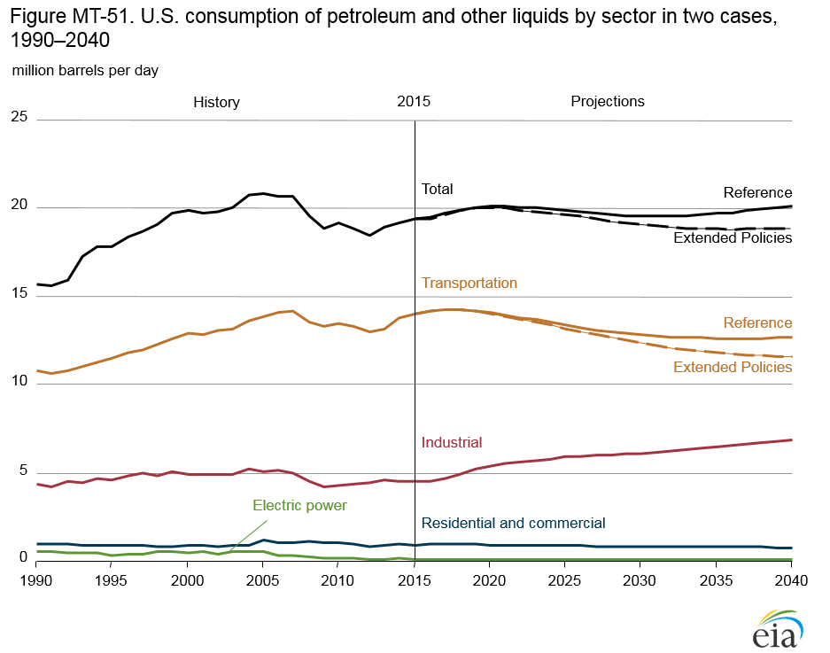
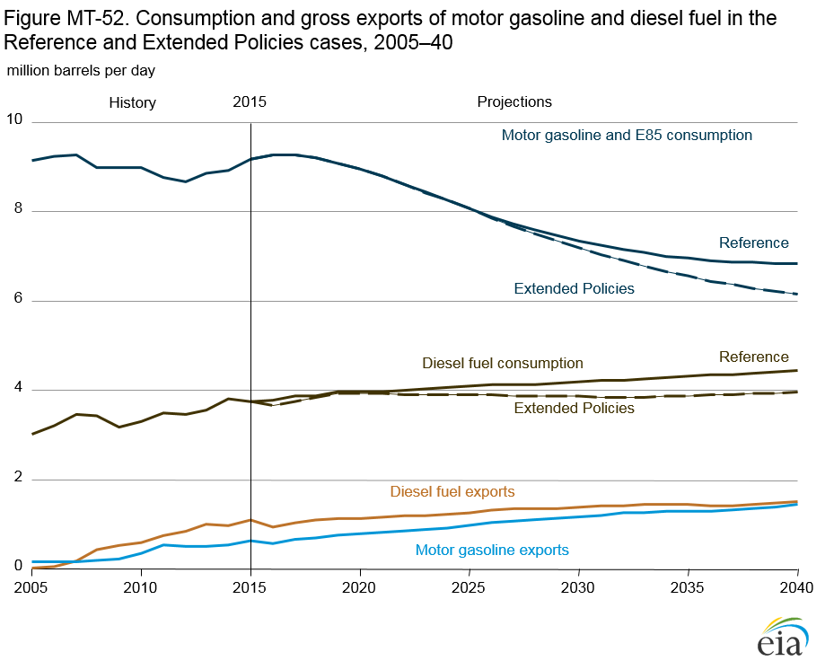
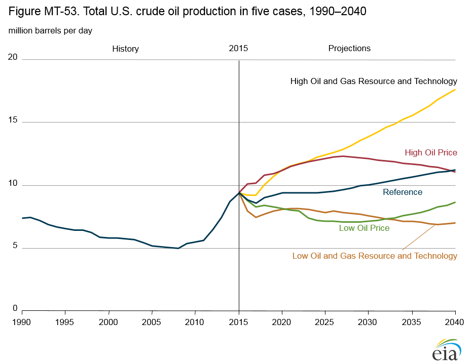
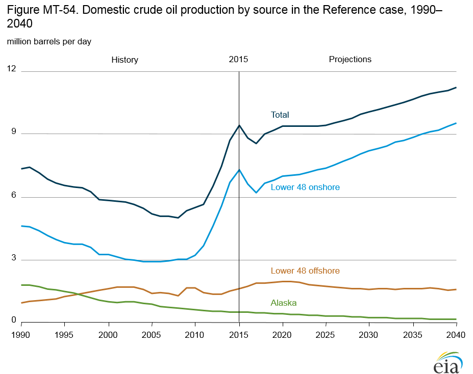
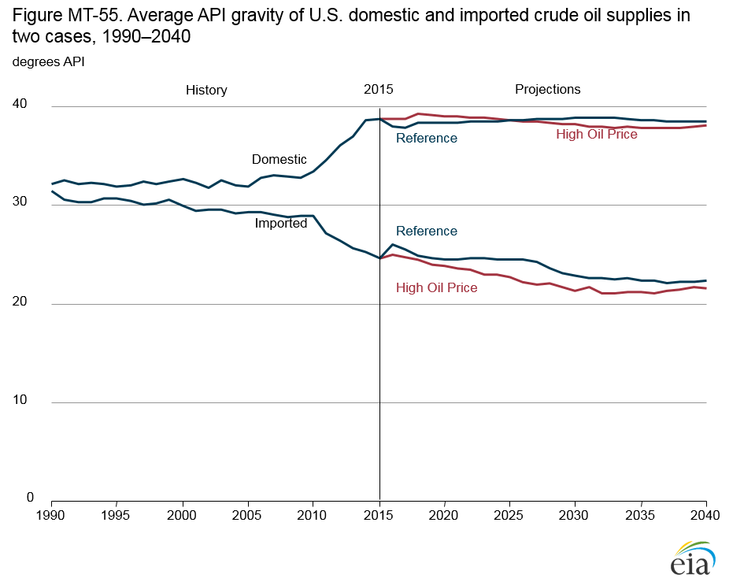
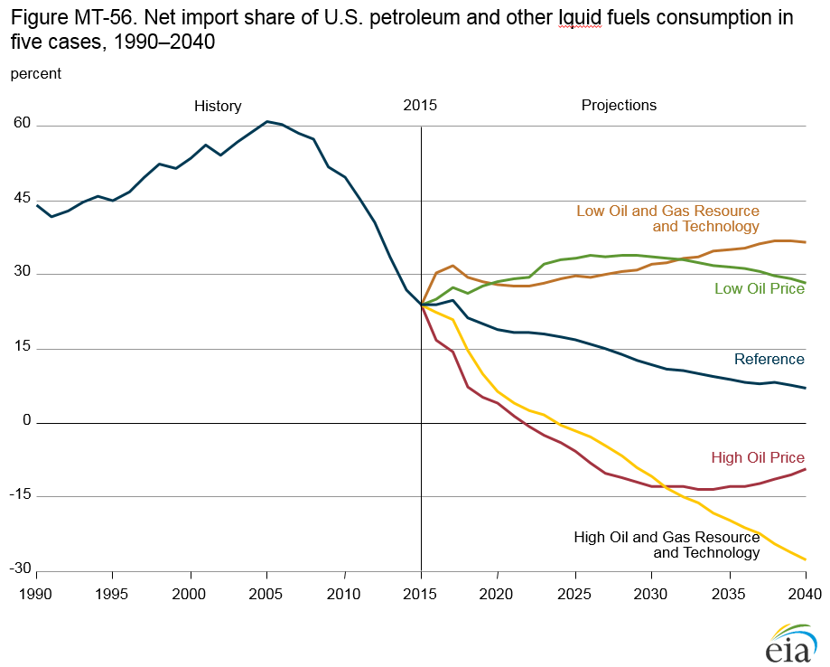
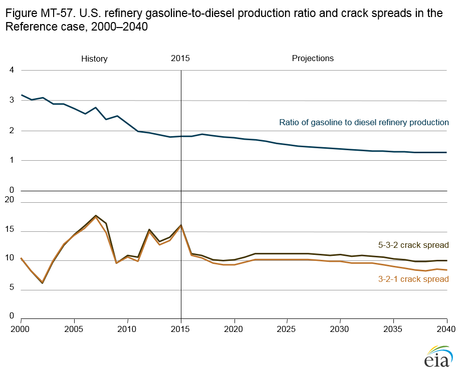

Annual Energy Outlook 2016
Full Release Date: September 15, 2016 | Next Release Date: January 2017 | full report
Market Trends: Liquid fuels
Petroleum and other liquids consumption is relatively level through 2040
Total consumption of petroleum and other liquids in the
AEO2016 Reference case remains relatively level through
2040, with decreases in transportation consumption offsetting
increases in industrial consumption. The transportation sector
continues to account for the largest share of total liquids
consumption (Figure MT-51). However, with improvements
in vehicle efficiency following incorporation of corporate
average fuel economy standards for both light-duty vehicles
and heavy-duty vehicles, the transportation share declines
from 72% in 2015 to 63% in 2040. In the industrial sector,
consumption of light chemical feedstocks—natural gas liquids
and refinery olefins—increases by 1.5 million barrels/day
(b/d) from 2015–40, largely as a result of increased supplies
of hydrocarbon gas liquids from natural gas and crude oil
production [14]. Transportation fuels—primarily motor
gasoline, ultra-low-sulfur diesel fuel, and jet fuel—can also
include biofuels in their compositions.

figure data
Total motor gasoline consumption decreases by approximately 2.3 million b/d from 2015–40 in the Reference case, while total diesel fuel consumption grows by 0.7 million b/d from 2015–40. Ethanol consumption in both low-blend and highblend gasoline is essentially flat throughout the projection, as gasoline consumption declines and the penetration of flex-fuel vehicles is limited.
Fuel consumption shares shift from motor gasoline toward diesel fuel in the Reference case
With corporate average fuel economy (CAFE) and greenhouse
gas (GHG) emissions standards included in the Reference case,
new light-duty vehicles (LDV) average 47 miles per gallon in
2025. The improvement in vehicle efficiency more than offsets
an increase in total LDV vehicle miles traveled (VMT), which
leads to a decline in motor gasoline consumption. In contrast,
diesel fuel consumption continues to grow as VMT increases
because of a smaller fuel efficiency improvement in freight
trucks than in LDVs. Consumption of diesel fuel grows by about
0.7 million barrels per day (b/d) from 2015–40, while motor
gasoline consumption falls by 2.3 million b/d (Figure MT-52).
With motor gasoline and diesel fuel consumption trending in
opposite directions, new refinery investment projects focus
on shifting production from gasoline to distillate fuels. The
Extended Policies case, which extends the CAFE and GHG
emissions standards through 2040, results in higher average
fuel efficiency for new LDVs and freight trucks, lower domestic
consumption of motor gasoline and diesel fuel, and higher
demand for electric and hybrid vehicles in 2040 compared with
the Reference case.

figure data
As a result of refinery economics and slower growth in domestic demand, no new U.S. petroleum refinery crude-unit capacity is built in the Reference case, except for plants already under construction in 2015. Refineries continue to export finished products to international markets. Gross exports of total finished petroleum products, excluding hydrocarbon gas liquids, increase from 3.2 million b/d in 2015 to 5.2 million b/d in 2040 in the Reference case. Gasoline and diesel exports constitute about 74% of the increase. The United States became a net exporter of finished petroleum products in 2011 and remains a net exporter through 2040 in the Reference case. In the Extended Policies case, gross exports of total finished petroleum products remain near the same level as in the Reference case. However, in response to reduced domestic consumption of motor gasoline and diesel fuel, U.S. refinery utilization drops to 85% (reflected in a reduction of gross imports of crude oil).
U.S. crude oil production depends on market prices, resource availability, and production costs
Projections of U.S. tight oil production are uncertain because
large portions of the known formations have little or no
production history and because technology improvements could
increase well productivity while reducing drilling, completion,
and production costs. The High and Low Oil and Gas Resource
and Technology cases apply different assumptions regarding
technology advances, prices, and resource size and quality than
used in the Reference case to examine the effects of higher and
lower domestic supply on energy demand, imports, and prices.
In the High Oil and Gas Resource and Technology case, higher well productivity and rates of technological progress reduce development and production costs per unit. The lower costs result in more and earlier development of oil and natural gas resources than in the Reference case (Figure MT-53), even after considering the effects that additional production would have on world markets for crude oil. U.S. crude oil production in this case increases to 17.7 million barrels per day (b/d) in 2040, compared with 11.3 million b/d in the Reference case, and cumulative production from 2015–40 is 126 billion barrels—about 32 billion barrels more than in the Reference case. In the Low Oil and Gas Resource and Technology case, U.S. crude oil production declines from 9.4 million b/d in 2015 to 7.0 million b/d in 2040, compared with 11.3 million b/d in the Reference case. Cumulative crude oil production from 2015–40 is 73 billion barrels, or about 21 billion barrels less than in the Reference case.

figure data
In the High Oil Price case, domestic crude oil production declines from 12.3 million b/d in 2027 to 11.0 million b/d in 2040. Cumulative production from 2015–40 is 109 billion barrels, compared with 94 billion barrels in the Reference case.
In the Low Oil Price case, production falls to 7.0 million b/d in 2028 and then increases to 8.6 million b/d in 2040. Cumulative production from 2015–40 is 74 billion barrels in the Low Oil Price case.
Lower 48 states onshore tight oil development increases U.S. crude oil production
In the Reference case, total U.S. crude oil production declines from 9.4 million barrels per day (b/d) in 2015 to 8.6 million b/d in 2017, then increases steadily to 11.3 million b/d in 2040 (Figure MT-54). With the average wellhead price of oil below $50 per barrel from 2015–17, lower 48 onshore production declines to 6.2 million b/d in 2017. After 2017, as crude oil prices rise, onshore crude oil production in the Lower 48 states increases to about 9.5 million b/d in 2040. The trend in Lower 48 states onshore crude oil production reflects the continued development of tight oil resources in the Bakken, the Western Gulf Basin (including the Eagle Ford play), and the Permian Basin. Tight oil production decreases to 4.2 million b/d in 2017 before increasing to 7.1 million b/d in 2040. The increase is primarily a result of higher oil prices and exploration and development programs that expand operator knowledge about producing reservoirs and lead to the identification of additional tight oil resources and development of new technologies that reduce costs and increase recovery.

figure data
Offshore production in the Lower 48 states is less sensitive than onshore production to short-term price movements. With the startup and development of deepwater projects in the Gulf of Mexico—including the Heidelberg and Appomattox fields starting in 2016 and 2017—lower 48 offshore crude oil production increases to 2.0 million b/d in 2021 in the Reference case, declines to 1.6 million b/d in 2030, and continues at about the 2030 level through 2040, as production from newly developed fields is offset by declines in production from legacy fields.
Lower 48 onshore crude oil production that uses carbon dioxide-enhanced oil recovery increases from 0.3 million b/d in 2017 to 0.7 million b/d in 2040, as oil prices rise and affordable anthropogenic sources of carbon dioxide become available. In Alaska, production (both onshore and offshore) declines from nearly 0.5 million b/d in 2015 to less than 0.2 million b/d in 2040.
Domestic production of tight oil reduces imports of light sweet crude oil
API gravity, as defined by the American Petroleum Institute
(API), is a measure of the specific gravity, or relative density, of
a liquid, expressed in degrees, with higher numbers indicating
lower densities. Refineries generally process a mix of crude oils
with a range of API gravities to optimize refinery operations.
Over the past 15 years, the API gravity of crude oil processed in
U.S. refineries has averaged between 30 and 32 degrees. As U.S.
refiners run more domestic light crude oil produced from tight
formations, they need less imported light crude to maintain an
optimal API gravity. With increasing U.S. production of light
crude oil in the AEO2016 Reference case, the average API
gravity of crude oil imports declines from 24.6 degrees in 2015
to 22.3 degrees in 2040 (Figure MT-55).

figure data
With total crude oil imports declining in the Reference case, imports of light crude oil are reduced further, resulting in a heavier slate of imported crude oil. The share of heavier crude oil imports grows through 2030 before stabilizing. The increase in demand for diesel fuel in the Reference case, from 3.8 million barrels/day (b/d) in 2015 to 4.4 million b/d in 2040, combined with a steady increase in exports of distillate fuel oil, from 1.2 million b/d in 2015 to 1.8 million b/d in 2040, strains the ability of refiners to switch from gasoline to distillate. As a result, distillate prices remain higher than gasoline prices through 2040.
In the High Oil Price case, domestic light crude oil production is higher than in the Reference case. With increased supplies of light crude oil available in domestic markets, light crude oil imports decline, and heavier crude oil imports become a larger share of total crude oil imports. As a result of the greater heavy crude oil share of total imports, the API gravity of crude oil imports is lower in the High Oil Price case than in the Reference case.
Increasing U.S. oil supply reduces net imports of petroleum and other liquid fuels
From the mid-1980s to 2005, the net crude oil and product imports share of U.S. petroleum and other liquid fuels consumption grew, and then from 2005–15 it fell steadily (Figure MT-56). In the Reference case, as tight oil production declines from 2015–17, the net import share of U.S. petroleum and other liquids consumption increases before resuming its decline to 7.4% in 2040, when U.S. net imports total 1.4 million barrels per day (b/d).

figure data
The outlook for net petroleum and other liquid fuel imports
in the High and Low Oil Price and High and Low Oil and Gas
Resource and Technology cases depends on U.S. oil production
levels. Higher oil prices reduce consumption and encourage
development of oil resources. In the High Oil Price case, with
domestic liquids production rising and consumption declining,
the United States becomes a net exporter of petroleum and
other liquids. Total net exports in the High Oil Price case
reach 2.4 million b/d in 2033 before declining to 1.7 million
b/d in 2040. In the Low Oil Price case, the net import share of
domestic consumption rises to 33.8% (6.0 million b/d) in 2028
before declining to 28.3% (6.1 million b/d) in 2040.
In the High Oil and Gas Resource and Technology case, with improvements in oil production technology beyond those in the Reference case and estimated ultimate recovery (EUR) 50% higher than in the Reference case, U.S. crude oil productionincreases to 17.7 million b/d in 2040. The United States transitions from a net importer of crude oil and petroleum products to a net exporter of 5.6 million b/d in 2040 in the High Oil and Gas Resource and Technology case. In the Low Oil and Gas Resource and Technology case, which assumes slower advances in production technology and a 50% lower EUR than in the Reference case, the net import share of U.S. crude oil and petroleum product consumption falls to 27.6% (5.5 million b/d) in 2022 before beginning a steady increase to 37.3% (7.4 million b/d) in 2040.
Petroleum refinery yields and crack spreads shift with changes in liquid fuels demand
The transition to lower gasoline and higher diesel fuel
production has a significant effect on petroleum refinery
operations in the AEO2016 Reference case, with the ratio
of gasoline to diesel production declining from 1.8 in 2015
to below 1.3 in 2040 (Figure MT-57, top). In response to the
drop in gasoline demand, refinery utilization of fluid catalytic
cracking (FCC) units falls. In contrast, with diesel production
increasing, installed distillate and gas oil hydrocracking
calendar day capacity grows from 2.1 million barrels per day
(b/d) in 2015 to 2.6 million b/d in 2040, indicating a shift from
FCC to hydrocrackers to maximize diesel production.

figure data
Refinery profitability is affected by crude oil input costs, processing costs, and market prices for the end products. Profitability often is estimated from the crack spread, which is the difference between the price of crude oil and the price of finished products—typically, gasoline and distillate fuel. The 3-2-1 crack spread estimates the profitability of processing three barrels of crude oil to produce two barrels of gasoline and one barrel of distillate. In the Reference case, the 3-2-1 crack spread (based on Brent crude oil prices) declines from $16/barrel in 2015 to $8/barrel in 2040 (2015 dollars) (Figure MT-57, bottom). A 5-3-2 crack spread, which estimates the profitability of processing five barrels of crude oil to produce three barrels of gasoline and two barrels of distillate, is more representative of the trend toward higher distillate production to meet market demands.
Endnotes
- Hydrocarbon gas liquids include liquids produced from natural gas processing plants and fractionators and liquefied gases from crude oil refineries.
In This Section
- Petroleum and other liquids consumption is relatively level through 2040
- Fuel consumption shares shift from motor gasoline toward diesel fuel in the Reference case
- U.S. crude oil production depends on market prices, resource availability, and production costs
- Lower 48 onshore tight oil development increases U.S. crude oil production
- Domestic production of tight oil reduces imports of light sweet crude oil
- Increasing U.S. oil supply reduces net imports of petroleum and other liquid fuels
- Petroleum refinery yields and crack spreads shift with changes in liquid fuels demand
Interactive Table Viewer ›
Provides custom data views of all AEO2016 cases. All available cases can be charted and the data for them downloaded.